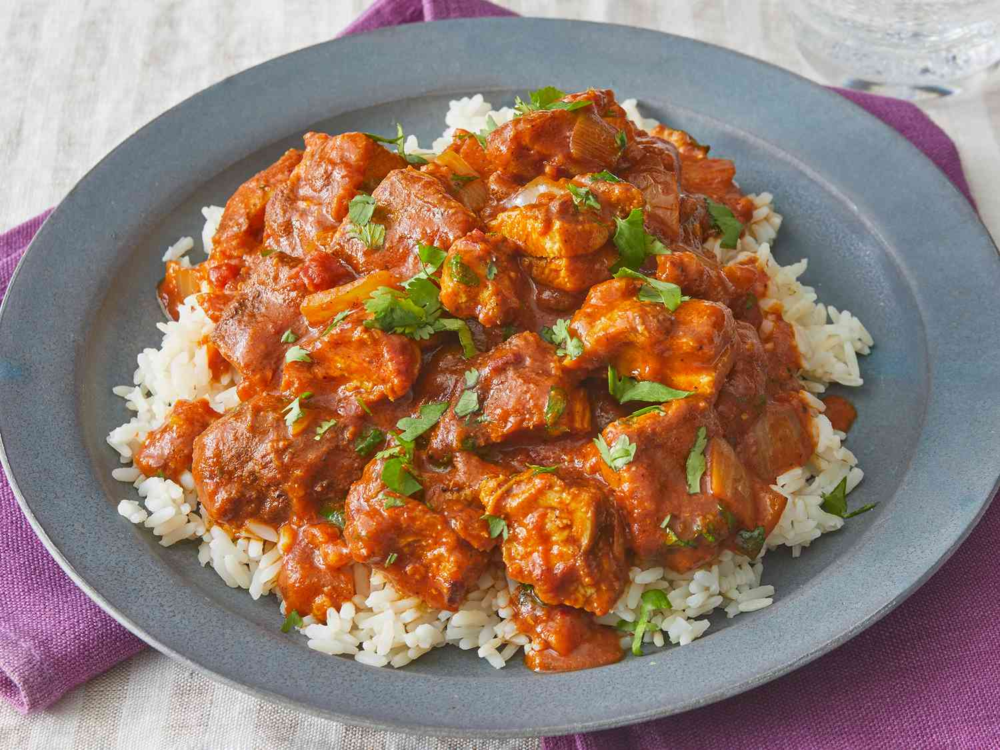

BUTTER CHICKEN
Butter Chicken is one of the most popular Indian dishes. It is made with tender chicken cooked in a creamy tomato sauce mixed with butter, cream, and traditional Indian spices. This dish is commonly eaten with naan bread or rice and is loved for its rich flavour and smooth texture.

BIRYANI
Biryani is a famous Indian rice dish made with aromatic rice, spices, vegetables, or meat such as chicken or lamb. It is cooked slowly to allow all the flavours to blend together. Biryani is often served during celebrations and family events.

SAMOSA
Samosas are crispy fried pastries filled with spicy potatoes, peas, and sometimes meat. They are a popular Indian snack enjoyed with chutneys and tea. Samosas are known for their crunchy texture and delicious spicy filling. Well just to put it out there Samosas are considered more of a snack food type rather than a cuisine or meal.

CHICKEN TIKKA MASALA
Chicken tikka masala is a curry consisting of roasted marinated chicken pieces in a creamy spiced sauce. It is thought to have been created in Britain, possibly by Ali Ahmed Aslam in Glasgow. It is offered at restaurants around the world and in some of its forms is similar to butter chicken.